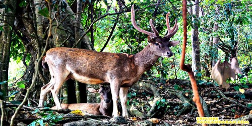
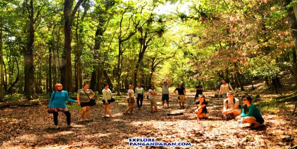

Pangandaran | Jawa Barat | Indonesia
Pangandaran adalah salah satu Kabupaten di jawa Barat yang terkenal dengan pantainya. Tidak hanya pantai, Pangandaran juga ternyata punya tempat wisata lainnya, seperti sungai, gua, cagar alam, dan masih banyak lagi.
Sangat cocok dijadikan tempat untuk refreshing karena lokasinya yang strategis. Hotel atau penginapan bisa ditemukan dimana saja di Pangandaran, terdapat pula tempat makan yang menyajikan berbagai menu, jadi anda tidak akan bosan bila datang kesana.
Tentang budget yang harus dikeluarkan juga tidak perlu cemas, karena anda akan merasa puas dengan harga yang diberikan sesuai dengan apa yang anda dapatkan.
Berikut adalah beberapa tempat wisata di Pangandaran yang wajib anda kunjungi
1. Pantai Pangandaran
Pantai Pangandaran berada di urutan pertama karena setiap harinya selalu penuh pengunjung.
Mempunyai 2 sisi, ada Pantai Barat dan Pantai Timur. Pantai yang paling sering dikunjungi wisatawan adalah Pantai Barat Pangandaran. Mempunyai berbagai keiistimewaan seperti :
Pantai Timur Pangandaran juga tidak kalah cantik. Jika di Pantai Barat kita bisa menikmati sunset di sore hari, di Pantai Timur kita bisa menikmati sunrise.
Sayangnya Pantai Timur tidak bisa digunakan untuk berenang dan bermain pasir, karena luas Pantai Timur lebih kecil dari Pantai Barat.
Tetapi, di Pantai Timur terdapat Watersport seperti jumper donat, banana boat, dan lain-lain. Untuk informasi lebih lanjut klik Watersport Pangandaran
|  |  |
Pangandaran tidak hanya memiliki pantai saja, Pangandaran juga memiliki Cagar Alam yang menjadi tempat rumahnya flora dan fauna. Lokasinya berdekatan dengan Pantai Pangandaran.
Fauna yang bisa ditemukan disana diantaranya adalah jenis satwa liar seperti monyet ekor panjang, rusa, kancil. Ada juga jenis satwa lain seperti reptilia, dan burung.
Hutan sekunder yang terdapat di Cagar Alam dihuni oleh flora yang lebih didominasi oleh laban, kisegel, pohon kondang, pohon barringtonia, dan masih banyak lagi.
Selain flora dan fauna terdapat juga batu prasasti, Batu Kalde yang merupakan salah satu batu peninggalan sejarah zaman Hindu. Ada juga Gua alam dan gua buatan seperti gua-gua peninggalan Jepang.
Wisatawan Domestik:
Wisatawan Mancanegara :
Nama Green Canyon ini merupakan pelesetan dari nama Grand Canyon yang ada di Colorado, Amerika Serikat. Orang Sunda menyebut Green Canyon dengan sebutan Cukang Taneuh yang dalam bahasa Indonesia berarti Jembatan Tanah.
Untuk mencapai tempat ini, kita harus menyewa sebuah perahu kayuh dari dermaga Ciseureuh. Perjalanannya memakan waktu kurang lebih 30-45 menit dengan jarak sekitar 3 km untuk sampai ke Green Canyon. Harga sampannya Rp.200.000 untuk maksimal 5 orang dan beroperasi setiap hari mulai dari pukul 7.30 sampai 16.00 WIB. Sepanjang perjalanan, mata kita akan dimanjakan oleh hijau teduhnya warna air sungai. Di mulut gua terdapat air terjun palatar sehingga suasana di objek wisata ini terasa begitu sejuk.
Kegiatan yang dapat dilakukan diantaranya panjat tebing, berenang, bermain kayak, bersampan sambil memancing. Untuk mencapai lokasi ini wisatawan dapat menggunakan perahu yang banyak tersedia di Dermaga Ciseureuh baik perahu tempel maupun perahu kayuh.